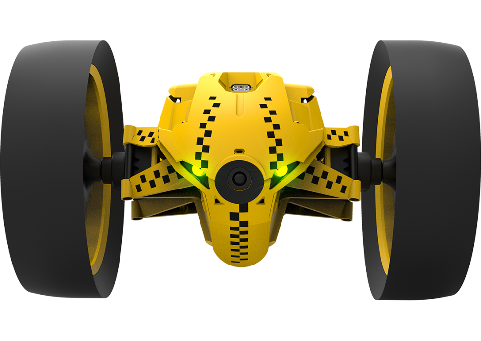
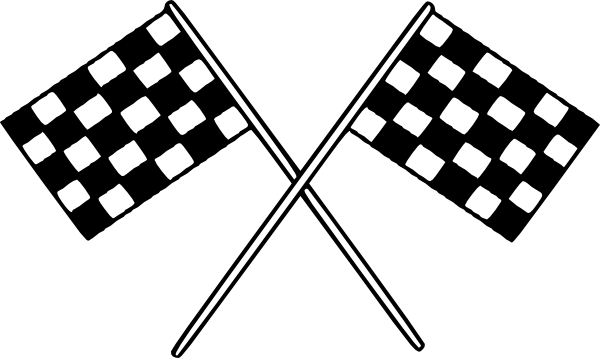

@keyframes
Jedną z nowości CSS jest animacja. Dodanie animacji do elementu HTML jest bardzo proste. Możemy wykorzystać do tego celu właściwość animation.



Jedną z nowości CSS jest animacja. Dodanie animacji do elementu HTML jest bardzo proste. Możemy wykorzystać do tego celu właściwość animation.
Za pomocą właściwości transform możemy przekształcić interesujący nas element HTML w przestrzeni 2D lub 3D.
Aby utworzyć efekt transition w danym elemencie HTML musimy wykonać kilka czynności. Po pierwsze musimy utworzyć dodatkowy wygląd dla danego elementu HTML, który zostanie aktywowany w jakiś dynamiczny sposób, np. w momencie gdy najedziemy na jego obszar kursorem myszki